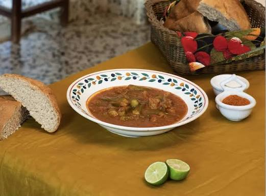

Famous Bamya Dish
Here is a picture of how it looks.

This picture is from Sudanese Kitchen.
This is my moms delicious homemade bamya passed down from her mom.
Why its so important to our family
Bamya is one of our most known dish and we cook it mostly during the winter time. Bamya is a comfort food to us because it reminds us of our home, bringing back alot of good memories eating it with the rest of our family back home.
Ingredients
- Okra: 1 lb fresh baby okra or frozen cut/whole okra (do not thaw frozen okra before cooking).
- Aromatics & Veggies: 1 chopped yellow onion, 4 to 6 minced garlic cloves, and we use jalapeño or chili peppers to spice up our dish.
- Tomatoes: 1 1/2 cups of crushed tomatoes or use tomato sauce to make ur dish taste smoother, plus tomato paste and fresh diced tomatoes.
- Meat (Optional): We usually use 0.5 - 1 lb amount of beef stew meat or lamb meat.
- Base: Extra virgin olive oil or vegetable oil, plus chicken broth/stock.
- Spices: All spices HAVE TO BE GROUND, coriander, cumin, cinnamon, or Lebanese 7-spice, plus lemon juice or pomegranate molasses added at the end for a zang taste.
Step by step cooking guide
- Sear the Meat (If using): Always Brown your beef or lamb until caramelized, then simmer until tender (or use a pressure cooker for more tender results!).
- Sauté the Aromatics: In a large pot, heat olive oil over medium-high heat. Add the chopped onions, garlic, and chiles, cooking until soft and fragrant.
- Simmer the Stew: Add in the tomato paste, crushed tomatoes, spices, cooked meat (if using), the okra (okra must be washed beforehand) and the broth/stock and stir it all. Bring to a boil, then cover partially, lower the heat, and simmer for 15 to 25 minutes until the okra and meat are tender.
- Finish and Serve: Stir in fresh lemon juice or pomegranate molasses for a tangy finish.
Pro tip: If you dont want the okra to be slimey add the okra to a pan and sauté for 5 to 7 minutes, roasting or frying the okra beforehand also helps.